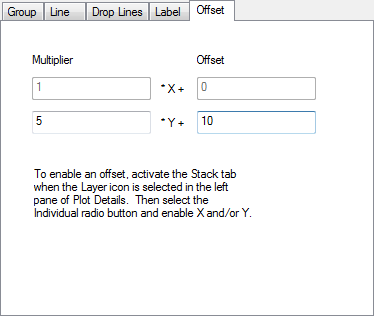

Die Registerkarte Versatz (Details Zeichnung)
PD-offset-tab
Diese Registerkarte ist nur verfügbar, wenn Individuell auf der Registerkarte Stapeln ausgewählt ist. Sie wird verwendet, um den Multiplizierer (Skalierungsfaktor) und Versatz in X- und/oder Y-Richtung der Datenzeichnung zu definieren.

Angenommen, die Koordinaten der ursprünglichen Datenzeichnung sind (X, Y). Die Koordinaten (X', Y') der gestapelten Zeichnung werden, wie folgt, definiert:
X' = Multiplier_X * X + Offset_X
Y' = Multiplier_Y * Y + Offset_Y
Hinweise:
- Anstatt den Versatz auf dieser Registerkarte zu ändern, können Sie auch zweimal auf die Datenzeichnung klicken (kein Doppelklick), um sie zu markieren. Halten Sie die Maus gedrückt und ziehen Sie dann, um den Versatz zu ändern. Weitere Informationen finden Sie in diesem Tutorial.
- Die Option Multiplizierer ist nützlich, wenn der Achsenskalierungstyp geändert wird und sich der Zeichnungsbereich, der im Diagrammfenster angezeigt wird, dramatisch ändert, wenn die Y-Achse z.B. von Linear zu Log10 wechselt. Weitere Informationen finden Sie in dieser Schnellhilfe.
|